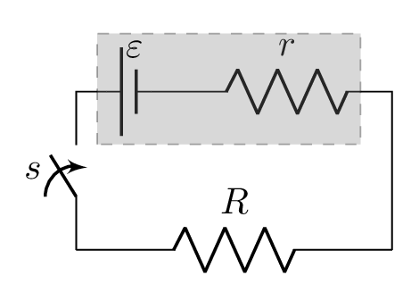
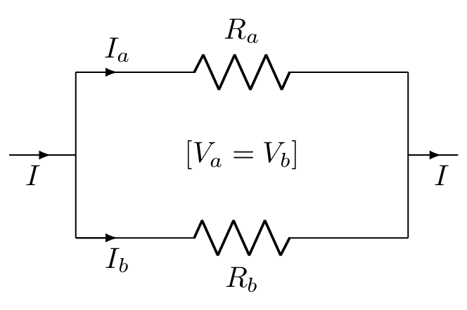
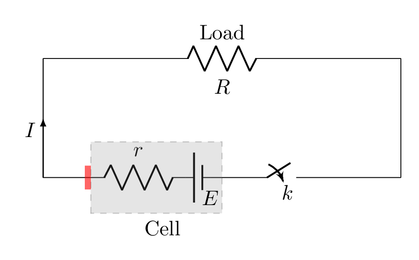
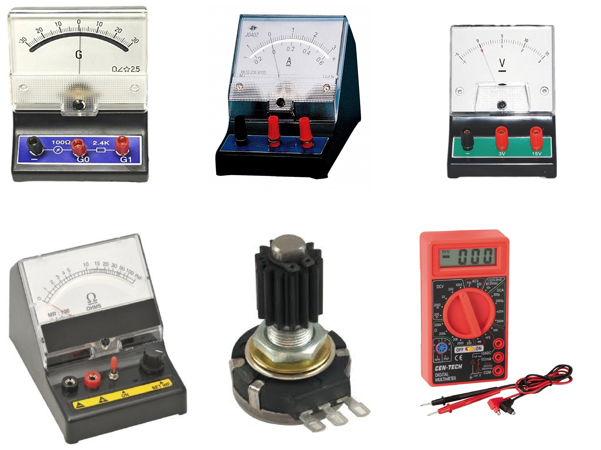

Section 2.3 Electrical Circuits
Electrical circuit is a network of electrical elements through which current can flow in a closed path. Here are some terminologies that are needed to understand the electrical circuit.
Electromotive Force: It is an energy required by the source to send a unit positive charge in a closed loop of electrical circuits. In other words, it is a potential difference across two terminals of a source in an open circuit. It is abbreviated by emf and denoted as \(\mathscr{E}.\) Its unit is Volts.
Internal Resistance: It is a resistance of a source itself. Most voltage source such as battery works when electrolytes dissociate into cations and anions which restrict the flow of current in a circuit and constitutes an internal resistance of a source. All most every materials possess internal resistance even if a good conductor except superconducting materials within their physical conditions. It is denoted by \(r.\)
Terminal Voltage: It is a potential difference across the two terminals of a source in a closed circuit. It is denoted by \(V.\) In a colosed circuit there is a load in a circuit. Load is typically any resistance in the circuit and voltage drop at load will be the same as voltage accross the opposite terminals of the voltage source.

In Figure 2.3.1, \(R\) is given as a load and \(V\) is potential difference across it. This potential difference is called a terminal potential difference. If switch \(s\) is closed then current \(I\) starts flowing in the circuit and in this case
\begin{equation*}
\mathscr{E}= IR+Ir
\end{equation*}
\begin{equation*}
\text{or,}\quad \mathscr{E}=V+Ir
\end{equation*}
\begin{equation}
\text{or,}\quad \mathscr{E}-V = Ir\tag{2.3.1}
\end{equation}
If \(I=0\) then \(V= \mathscr{E},\) i.e., emf is a potential difference across the cell in an open circuit.
Subsection 2.3.1 A summary on internal resistance, emf, and terminal potential difference:
To understand internal resistance and emf lets consider a lead-acid cell. However, the similar senario could be applied for any other alkaline cells. In lead - acid cell dilute \(H_{2} SO_{4}\) has been used as an electrolyte which gets dissociated in \(H^{+}\) ions and \(SO_{4}^{--}\) ions in aquous environment as shown in Figure 2.3.2.(a). Now \(H^{+}\) ion migrates towards \(PbO_{2} \) electrode, captures electron from the electrode and becomes nacent hydrogen atom. Nacent \(H\) then reacts with \(PbO_{2}\) and forms \(H_{2}O\) and \(PbO\text{.}\) \(PbO\) instantly reacts with \(H_{2} SO_{4}\) molecule and converted into \(PbSO_{4}\text{.}\) As \(+ve\) charges start accumulating on \(PbO_{2} \) electrode, we call it a \(+ \) plate of the cell.
On the otherhand, \(SO_{4}^{--}\) ion attracts towards \(Pb\) electrode, dumps its negative charges on it and becomes \(SO_{4} \) radical which instantly reacts with \(Pb\) to form \(PbSO_{4}\text{.}\) In this case \(Pb\) electrode starts accumulating \(-ve\) charges and becomes a \(- \) plate of the cell. This process continues till sufficient charges accumulate on these electrodes and it is difficult for the other ions to migrate towards these electrodes because of electrostatic repulsion between the same charges. When transferring of charges by the ions to their respective electrodes stop then \(+\) electrode has accumated maximum positive \(+ve \) charge and \(- \) electrode has accumulated maximum negative \(-ve \) charge. This condition builds up maximum potential difference between the electrodes which is known as electromottife force, emf. The name emf is misleading but it came from its founder, "Alessandro Volta" who had used this term as the real reason behind the motion of these charges in the external circuit was not known. The chemical reactions on the electrodes are summarized as follows.
At \(+\) plate:
\begin{equation*}
PbO_{2}+2H \quad \longrightarrow \quad PbO + H_{2}O
\end{equation*}
\begin{equation*}
PbO + H_{2}SO_{4} \quad \longrightarrow \quad PbSO_{4}+H_{2}O
\end{equation*}
At \(-\) plate:
\begin{equation*}
Pb+SO_{4} \quad \longrightarrow \quad PbSO_{4}
\end{equation*}
1
Remember: Anode is the electrode where oxidation occurs and cathode is where reduction occurs. OILRIG: Oxydation Is Lossing of electron and Reduction Is Gaining of electron.
If a load, R is applied between the electrodes then accumulated negative charges begin to flow from cathode to anode via load as shown in Figure 2.3.2.(b). Due to which other +ve and -ve ions again start migrating towards electrodes to perform chemical reaction. Hence accumulation of charges on the electrodes in a solution and discharging via load are continuous by maintaing the equilibrium condition. The voltage at this time between the electrodes is known as terminal voltage or terminal potential difference as shown in Figure 2.3.2.(c). The difference \(\varepsilon -V \) is called the lost voltage. Lost voltage is proportional to the current or disacharging rate of the electrodes. The straight line \(A\) shows the ideal case of rate of accumulation of charges on the electrodes. The straight line \(1\) shows the rate of discharging of electrodes or current through the load. If higher load is applied current decreases on the load depicting line \(2\) in the graph. The projection of intersection point between rate of charging and rate of discharging on x axis gives the value of terminal potential difference (voltage). The terminal voltage increases with increasing load thus decreases the lost voltage on the internal resistance. Lost voltage occurs due to drop of voltage on internal resistance. See the equation above (2.3.1).
Subsection 2.3.2 Resistance Circuits:
It is an arrangement of resistances where current can flow in a certain closed path if it is allowed to do so.
Subsubsection 2.3.2.1 Combination of Resistances
There are two important arrangements of grouping the resistances in electrical circuits. They are series and parallel arrangements.
-
Series Combination of Resistances:.If the same current passes through each of the resistances in a combination then the combination is called a series combination of resistances as shown in Figure 2.3.3.(a).Let \(R_{1}, \quad R_{2},\) and \(R_{3}\) are three resistances connected in series and their terminals are connected to the cell of emf \(E\text{.}\) If a circuit draws current I from a cell then the same current I will also pass through each of the resistances. Hence from Ohm’s law\begin{equation*} E=V_{1}+V_{2}+V_{3}=IR_{1} + IR_{2} +IR_{3} = I (R_{1}+R_{2}+R_{3}) \end{equation*}\begin{equation} \text{or,}\quad R_{1}+R_{2}+R_{3}=\frac{E}{I} \tag{2.3.2} \end{equation}Now lets replace all of these resistances with such a single resistance \(R_{eq}\) that the circuit still draws the same amount of current I from the same cell of emf \(E\) as shown in Figure 2.3.3.(c). Hence from Ohm’s law\begin{equation*} E=IR_{eq} \end{equation*}\begin{equation} \text{or,}\quad R_{eq}=\frac{E}{I} \tag{2.3.3} \end{equation}\begin{equation} R_{eq}=R_{1}+R_{2}+R_{3} \tag{2.3.4} \end{equation}Hence in series combination of resistances equivalent resistance can be found by\begin{equation} R_{eq} = R_{1} + R_{2}+R_{3} + \cdots \tag{2.3.5} \end{equation}
-
Parallel Combination of Resistances:.If the current of a circuit gets distributed while passing through the resistances in combination then the combination is called a parallel combination of resistances as shown in Figure 2.3.3.(b).Let \(R_{1}, \quad R_{2},\) and \(R_{3}\) are three resistances connected in parallel and their terminals are connected to the cell of emf \(E\text{.}\) If a circuit draws current I from a cell and the current I splitted into \(I_{1},\quad I_{2}, \) and \(I_{3}\) before passing through the resistances then from Ohm’s law\begin{equation*} I=I_{1} + I_{2} +I_{3} \end{equation*}\begin{equation*} \text{or,}\quad I=\frac{E}{R_{1}}+\frac{E}{R_{2}}+\frac{E}{R_{3}} = E\left(\frac{1}{R_{1}}+\frac{1}{R_{2}}+\frac{1}{R_{3}}\right) \end{equation*}\begin{equation} \text{or,}\quad \frac{I}{E}= \left(\frac{1}{R_{1}}+\frac{1}{R_{2}}+\frac{1}{R_{3}}\right) \tag{2.3.6} \end{equation}Now lets replace all these resistances with such a single resistance \(R_{eq}\) that the circuit still draws the same amount of current I from the same cell of emf \(E \) as shown in Figure 2.3.3.(c). Hence from Ohm’s law\begin{equation*} E=IR_{eq} \end{equation*}\begin{equation} \text{or,}\quad \frac{1}{R_{eq}}=\frac{I}{E} \tag{2.3.7} \end{equation}\begin{equation} \frac{1}{R_{eq}}=\frac{1}{R_{1}}+ \frac{1}{R_{2}}+\frac{1}{R_{3}} \tag{2.3.8} \end{equation}Hence in parallel combination of resistances equivalent resistance can be found by\begin{equation} \frac{1}{R_{eq}}=\frac{1}{R_{1}}+ \frac{1}{R_{2}}+\frac{1}{R_{3}}+\cdots \tag{2.3.9} \end{equation}
Current in Parallel Resistances:.

\begin{equation*}
\because \quad V_{a} = V_{b}
\end{equation*}
we have
\begin{equation*}
I_{a}R_{a} = I_{b}R_{b}
\end{equation*}
\begin{equation*}
\text{or,}\quad 1 +\frac{I_{a}}{I_{b}} = 1+\frac{R_{b}}{R_{a}}
\end{equation*}
\begin{equation*}
\Rightarrow \quad \frac{I}{I_{b} } = \frac{R_{a}+R_{b}}{R_{b}}
\end{equation*}
\begin{equation}
\therefore I_{b}= \frac{R_{b}}{R_{a}+R_{b}}I\tag{2.3.10}
\end{equation}
Subsection 2.3.3 Maximum Power Transfer Theorem
In an electric circuit emf of a source generates power to the circuit and load dissipates that power. Some of this power is also dissipated at the internal resistance of the source and hence the power transferred to the load is less than the power generated.

Lets calculate the maximum power transfer to the load. Consider a simple circuit as shown in Figure 2.3.5. Now, power generated by the source is given by
\begin{equation}
P_{s}=EI \tag{2.3.11}
\end{equation}
and power transfered to the load can be
\begin{equation}
P_{l}=VI =I^{2}R \tag{2.3.12}
\end{equation}
From Ohm’s law, we have
\begin{equation*}
E= Ir+IR=I(R+r)
\end{equation*}
\begin{equation}
\text{or,}\quad I=\frac{E}{R+r} 5 \tag{2.3.13}
\end{equation}
\begin{equation}
P=I^{2}R=\left[\frac{E}{R+r}\right]^{2}R=\frac{E^{2}R}{(R+r)^{2}} \tag{2.3.14}
\end{equation}
That is, power transfer depends upon the load resistance. Hence, maximum power transfer can be obtained by
\begin{align*}
\frac{dP}{dR} \amp =0 \\
or, \quad \frac{d}{dR}\left[\frac{E^{2}R}{(R+r)^{2}}\right]\amp =0\\
or, \quad \frac{E^{2}}{(R+r)^{2}}+R\left[E^{2}\left(\frac{-2}{(R+r)^{3}}\right).1\right] \amp =0\\
or, \quad \frac{E^{2}}{(R+r)^{2}}\left[1-\frac{2R}{R+r}\right]\amp =0
\end{align*}
\begin{equation*}
\because \frac{E}{R+r}=I \neq 0 \qquad \Rightarrow 1-\frac{2R}{R+r} = 0
\end{equation*}
\begin{equation*}
\therefore \quad R=r
\end{equation*}
Thus the source can transfer maximum power to the load only when load resistance is equal to the internal resistance of the source.
Subsection 2.3.4 Electrical Instruments:
Instruments used to analyze or measure electrical entities are called electrical instruments Figure 2.3.6.

Galvanometer: It is an instrument used to detect electrical current in a circuit. It deflects its needle either right or left if there is a current in a circuit. See [examples B question number 2] to know how galvanometer can be converted into ammeter or voltmeter.
Ammeter: It is an instrument used to measure electrical current in a circuit. It is connected series in a circuit where current to be measured. It has a very low internal resistance.
Voltmeter: It is an instrument used to measure potential difference across electrical components in a circuit. It is connected in a parallel to the component where potential drop is to be measured. It has a very high internal resistance.
Ohmmeter: It is an instrument used to measure resistance of a component in a circuit.
Potentiometer: It is a variable resistance normally used to controll potential in a circuit. It has three terminals.
Multimeter: It is a device composed of many electrical instruments and has multi-function capacity. It can be used as a voltmeter, ammeter, ohmmeter, and so on.